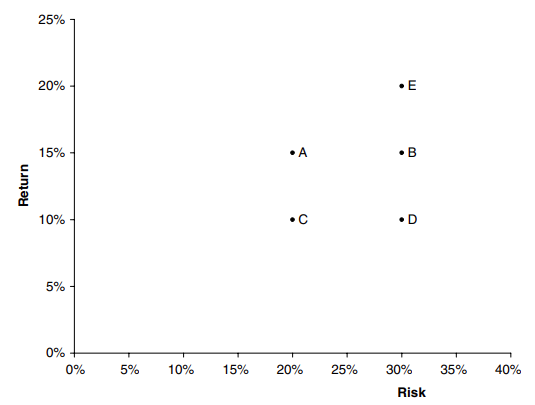
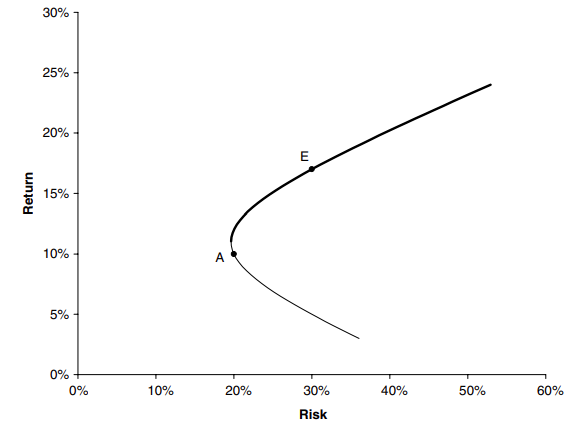
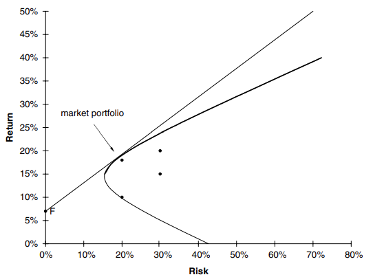
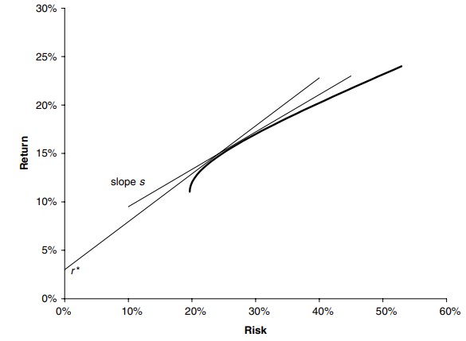
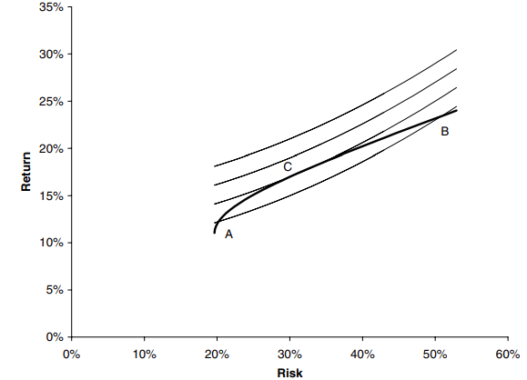

Portfolio management
Generalidades
La teoría de la fijación de precios de derivados es una teoría de rendimientos deterministas: cubrimos nuestros derivados con el subyacente para eliminar el riesgo, y nuestra cartera libre de riesgo resultante gana la tasa de interés libre de riesgo. Los bancos ganan dinero con este proceso de cobertura; venden algo por un poco más de lo que vale y cubrir el riesgo para obtener una ganancia garantizada. Los gestores de fondos compran y venden activos (incluidos los derivados) con el objetivo de superar la tasa de rendimiento del banco. Al hacerlo, se arriesgan. En este artículo explico algunas de la teorías detrás del riesgo y la recompensa de la inversión y, como optimizar una cartera para obtener el mejor valor por dinero.
Diversificación
Introduciremos algo de notación y muestro el efecto de la diversificación sobre la rentabilidad de la cartera. Supongamos que tenemos una cartera de \(N\) activos. El valor hoy del i-ésimo activo es \(S_i\) y su rendimiento aleatorio es \(R_i\) sobre nuestro horizonte de tiempo \(T\). Las \(R_i \sim N(\mu_iT, \sigma_i\sqrt{T})\). La correlación entre los rendimientos de la i-ésima y j-ésimo activo es \(\rho_{ij}\) (con \(\rho_{ii} = 1\)).
Los parámetros \(\mu, \sigma\) y \(\rho\) corresponden a la media, volatilidad y correlación a la que estamos acostumbrados. Tenga en cuenta la escala con el horizonte de tiempo.
Si tenemos \(w_i\) del i-ésimo activo, entonces nuestra cartera tiene valor
\[ \Pi = \sum_{i=1}^{N} w_iS_i \]
Al final de nuestro horizonte temporal, el valor es
\[\Pi + \delta\Pi = \sum_{i=1}^{N} w_iS_i(1+R_i)\]
Podemos escribir el cambio relativo en el valor de la cartera como
\[ \frac{\delta\Pi}{\Pi} = \sum_{i=1}^N W_iR_i\hspace{1.5cm} (1) \]
donde
\[ W_i = \frac{w_iS_i}{\sum_{i=1}^N w_iS_i} \]
Los pesos \(W_i\) suman uno.
A partir de (1) es sencillo calcular el rendimiento esperado de la cartera
\[ \mu_{\Pi} = \frac{1}{T}E\left[\begin{array}{c}\frac{\delta\Pi}{\Pi}\end{array}\right] = \sum_{i=1}^{N}W_i \mu_i\hspace{6cm} (2) \]
Y la desviación estándar de los retornos son
\[ \sigma_{\Pi} = \frac{1}{\sqrt{T}}\sqrt{var\left[\begin{array}{0} \frac{\delta \Pi}{\Pi}\end{array}\right]} = \sqrt{\sum_{i=1}^{N}\sum_{j=1}^N W_iW_j \rho_{ij}\sigma_i\sigma_j}\hspace{1.5cm} (3) \]
En ellos hemos relacionado los parámetros de los activos individuales con la rentabilidad esperada y la desviación estándar de toda la cartera.
Supongamos que tenemos activos en nuestra cartera que no están correlacionados, es decir, \(\rho_{ij} = 0\), \(i = j\). Para simplificar las cosas, suponga que tienen el mismo peso, de modo que \(W_i = \frac{1}{N}\). El rendimiento esperado de la cartera está representado por
\[ \mu_{\Pi} = \frac{1}{N}\sum_{i=1}^N \mu_i \]
El promedio de los rendimientos esperados de todos los activos, y la volatilidad se convierte en
\[ \sigma_{\Pi} = \sqrt{\frac{1}{N^2}\sum_{i=1}^N \sigma_i^2} \]
Esta volatilidad es \(O(N^{-1/2})\) ya que hay \(N\) términos en la suma. A medida que aumentamos el número de activos en cartera, la desviación estándar de los rendimientos tiende a cero.
Supongamos que todos los activos no están correlacionados, pero veremos algo similar cuando describa el Modelo de fijación de precios de activos de capital; la diversificación reduce la volatilidad sin perjudicar las expectativas de rendimientos.
Ahora me voy a referir a la volatilidad o desviación estándar como riesgo, algo malo que debe evitarse (dentro de lo razonable), y el rendimiento esperado como recompensa, algo bueno que queremos tanto como sea posible.
Teoría Moderna del Portafolio
Pödemos usar el marco anterior para discutir la “mejor” cartera. La definición de “mejor” fue abordada con mucho éxito por el Premio Nobel Harry Markowitz. Su modelo proporciona una manera de definir carteras que sean eficientes.
Una cartera eficiente es aquella que tiene la recompensa más alta para un nivel de riesgo, o el riesgo más bajo para una recompensa dada. Para ver cómo funciona esto imagina que hay cuatro activos en el mundo \(A, B, C\) y \(D\) con recompensa y riesgo como se muestra en la figura 1 (ignore E por el momento). Si pudieras comprar alguno de estos (pero de momentos no te permiten más de uno), ¿cuál comprarías? eliges D? No, porque tiene el mismo riesgo que B pero menos recompensa, tiene la misma recompensa que como C pero pun mayor riesgo. Entonces, podemos descartar \(D\). ¿Qué pasa con B o C? Ambos son atractivos cuando se comparan con D, pero entre si no estan claro, B tiene un mayor riesgo, pero obtiene una mayor recompensa. Sin embargo, comparándolos a ambos con A vemos que no hay competencia, ya que A es la elección preferida. Si introducimos el activo E con el mismo riesgo que B y una recompensa mayor que A, entonces no podemos decir objetivamente cuál de A y E es mejor; esta es una elección subjetiva y depende de las preferencias de riesgo de un inversor.

Ahora suponga que tengo los dos activos A y E de la figura 2, y puedo combinar en mi cartera, ¿qué efecto tiene esto en mi riesgo/recompensa?

De (2) y (3) tenemos
\[\mu_{\Pi} = W\mu_{A} + (1-W)\mu_{E}\]
y
\[ \sigma_{\Pi}^2 = W^2\sigma_{A}^2 + 2W(1-W)\rho\sigma_{A}\sigma_{E} + (1-W)^2\sigma_{E}^2 \]
Aquí \(w\) es el peso del activo A y, recordando que los pesos deben sumar uno, el peso del activo E es \(1 - E\).
A medida que variamos W, también cambian el riesgo y la recompensa. La linea en el espacio de riesgo/recompensa que es parametrizada por W es una hipérbola, como se muestra en la figura 2. La parte de esta curva en negrita es eficiente, y es preferible al resto de la curva. Una ves más, las preferencias de riesgo de un individuo dirá dónde quiere estar en la curva audaz. Cuando una de las volatilidades es cero la línea se vuelvve recta. en cualquier lugar de la curva entre los dos puntos se requiere una posición larga en cada activo. Fuera de esta región, uno de los activos se vende al descubierto para financiar la compra del otro. Todo lo que sigue asume que podemos vender al descubierto tanto activo como queramos. Los resultados cambian ligeramente cuando hay restricciones.
Si tenemos muchos activos en nuestra cartera, ya no tenemos una simple hipérbola para nuestros posibles perfiles de riesgo/recompensa; en cambio obtenemos algo como lo que se muestra en la Figura 3.

Esta figura ahora usa todo A, B, C, D y E, no solo A y E. Aunque B, C y D no son individualmente atractivos, bien pueden ser útiles en un portafolio, dependiendo de como se correlacionen, o no, con otras inversiones. En esta figura podemos ver la frontera eficiente marcada en negrita. Dado cualquier elección de cartera elegiríamos tener una que se encuentre en esta frontera eficiente.
Incluir una inversión sin riesgo
Una inversión sin riesgo que gana una tasa de rendimiento garantizada \(r\) sería el punto F en la Figura 3. Si se nos permite mantener este activo en nuestra cartera, dado que la volatilidad de este activo es cero, obtenemos la nueva frontera eficiente que es la línea recta en la Figura 3. El portafolio para el que la línea recta toca la frontera eficiente original se denomina cartera de mercado. La linea recta en sí misma se llama la línea del mercado de capitales.
Donde quiero estar en la frontera eficiente?
Habiendo encontrado la frontera eficiente, queremos aber dónde debemos estar. Esta es una elección personal, la frontera eficiente es objetiva, dados los datos, pero la “mejor” posición en ella es subjetiva.
La siguiente es una forma de interpretar el diagrama de riesgo/recompensa que puede ser útil en la elección de la mejor cartera.
El rendimiento de la cartera se distribuye normalmente porque está compuesto por activos que se distribuyen normalmente. Tiene media \(\mu\) y desviación estándar \(\sigma\) (he ignorado la dependencia del horizonte T). La pendiente de la línea que une la cartera con el activo libre de riesgo es
\[ s = \frac{\mu_{\Pi} - r}{\sigma_{\Pi}} \]
Esta es una cantidad importante; es una medida de la probabilidad de tenter un rendimiento que exceda r. Si \(C(.)\) es la función acumulada para la distribución normal estandarizada, entonces \(C(s)\) es la probabilidad de que el rendimiento en \(\Pi\) sea al menos q \(r\). Mas generalmente
\[ C\left(\begin{array}{0}\frac{\mu_{\Pi} - r^*}{\sigma_{\Pi}}\end{array}\right) \]
es la probabilidad de que el rendimiento exceda \(r^*\). Esto sugiere que si queremos minimizar la posibilidad de una rentabilidad inferior a \(r^*\) debemos elegir la cartera del conjunto de fronteras eficientes, \(\Pi_{eff}\) con el mayor valor de la pendiente
\[ \frac{\mu_{\Pi_{eff}} - r^*}{\sigma_{\Pi_{eff}}} \]
Por el contrario, si mantenemos la pendiente de esta línea fija en \(s\), entonces podemos decir que con una confianza de \(C(s)\) no perderemos más que
\[ \mu_{\Pi_{eff}} - s\sigma_{\Pi_{eff}} \]
Nuestra elección de cartera podría determinarse maximizando esta cantidad. Estas dos estrategías se muestran esquemáticamente en la Figura 5.

Ninguno de estos métodos da resultados satisfactorios cuando existe inversión libre de riesgo entre los activos y hay ventas cortas sin restricciones, ya que dan como resultado un endeudamiento infinito.
Otra forma de elegir la cartera óptima es con la ayuda de una función de utilidad. Este enfoque es popular entre los economistas. En la Figura 6 muestro las curvas de indiferencia y la frontera eficiente.

Las curvas reciben este nombre porque representan lineas a las cual el inversionista es indiferente al trade-off riesgo/recompensa. Un inversionista quiere un alto rendimiento y riesgo bajo. Frente a las carteras A y B en la Figura, ve a A con bajo rendimiento y bajo riesgo, pero B tiene una mejor recompensa a costa de un mayor riesgo. El inversor es indiferente entre estos dos. Sin embargo, C es mejor que ambos, estando en una curva preferida.